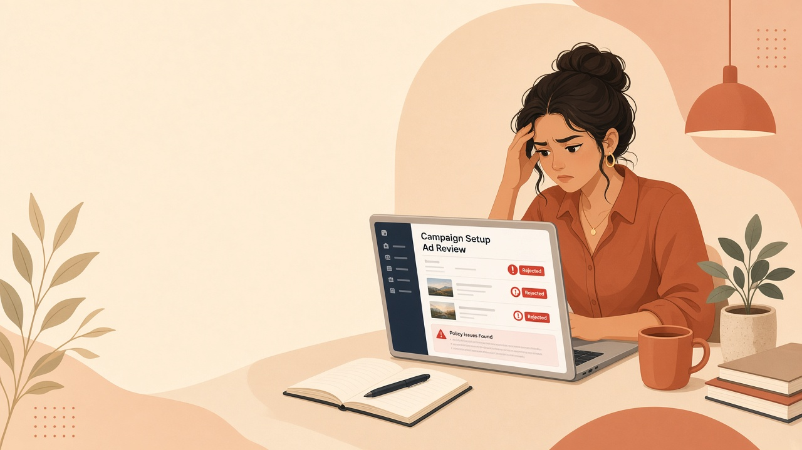
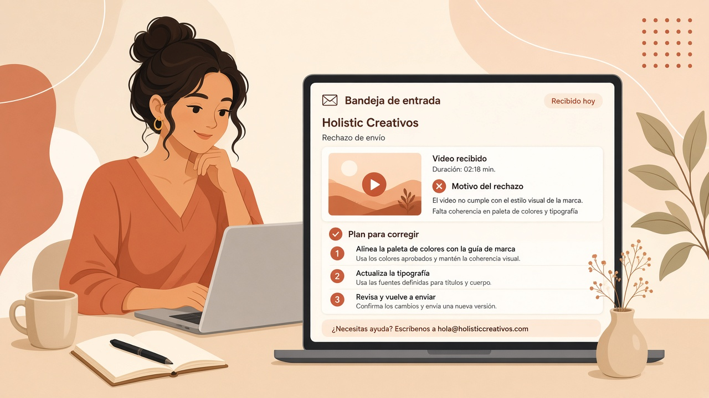
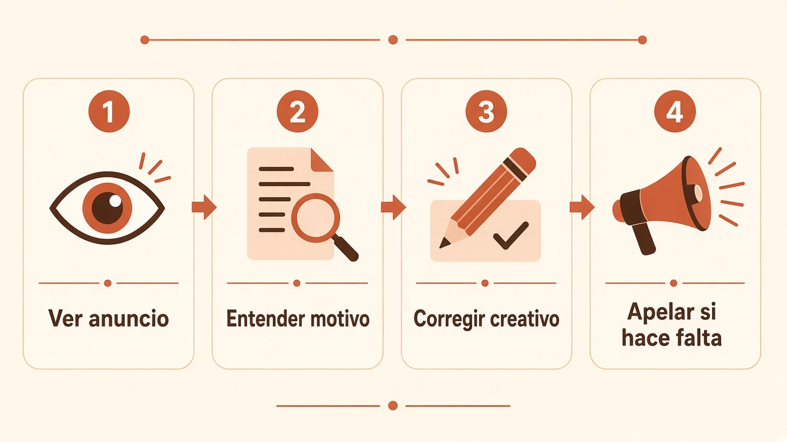

Investigación Holistic · Creativos
Sin pedirle a soporte que “mire el Ads Manager”.
Flechas ↑ ↓ o clic · Imprimir / PDF arriba a la izquierda
01 / 08
El problema
La persona no sabe qué pasó, qué tocar, ni si conviene apelar.

02 / 08
Qué queríamos
Ver el video, entender el rechazo y saber el siguiente paso — sin salir de Creativos.
El cliente se queda trabado y alguien del equipo tiene que revisar a mano.
Ve el creativo, lee el motivo claro y sigue un plan simple para corregirlo.
03 / 08

La solución
04 / 08
Cómo se usa

Abre el creativo y revisa el video completo.
Lee por qué TikTok lo rechazó, en palabras simples.
Sigue el plan y sube una versión mejor.
Solo si el rechazo parece un error claro.
05 / 08
Regla de oro
Si el video tiene algo que se puede cambiar (texto, imagen, tono, claim), lo correcto es corregir y publicar otra vez.
Apelar sin cambiar nada casi nunca ayuda. Gasta tiempo y no mejora el creativo.
06 / 08
Qué cambia para el negocio
Ve qué falló y qué hacer. No necesita esperar respuesta de soporte para el 80% de los casos.
Menos “mirame este rechazo”. El equipo entra solo cuando el caso es raro o grave.
07 / 08
Cierre
Creativos deja de ser “solo subir” y pasa a ser “arreglar rechazos sin salir de Holistic”.
08 / 08